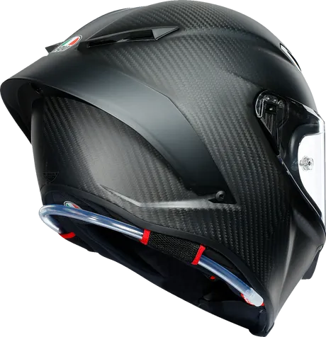
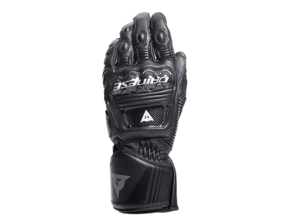
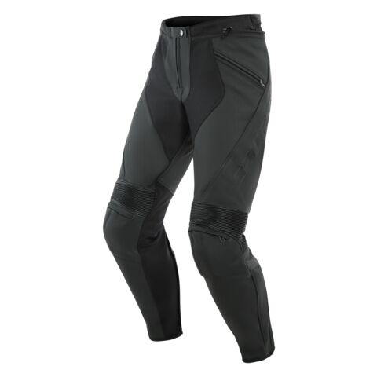
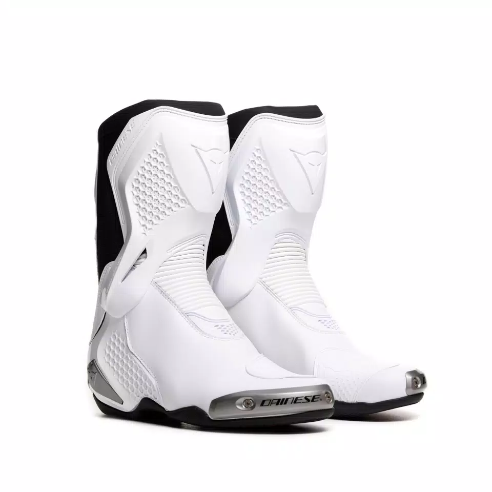

The Yamaha YZF-R6 is a legendary 600cc inline-four supersport
motorcycle produced by Yamaha from 1999 to 2020. It gained fame as
the world’s first production four-stroke motorcycle to exceed 100
horsepower in stock form, establishing a reputation for extreme
high-revving performance and razor-sharp track handling.
The Gear
AGV Pista

The AGV Pista GP RR is a flagship full-face racing helmet by the
Italian brand AGV, designed as an exact replica of the equipment
used by MotoGP champions. It features a 100% carbon fiber shell
available in four sizes to ensure a compact fit, weighing
approximately 1484 grams (Size M).
Dainese Druid 4s

The Dainese Druid 4 leather racing gloves are an expression of the
highest protection standards, designed for maximum performance on
the track and the road. World Championship safety and ergonomics
are guaranteed by the presence of the pre-curved and thermoformed
sleeve, the carbon inserts on the knuckles and back, and the
thermoplastic protector on the little finger. They are guaranteed
to be resistant owing to the polyurethane inserts on the palm and
joints, while four-way stretch ensures extreme comfort and a
perfect fit at all times.
Dainese Pony 3 Pants

The Pony 3 Perforated Pants take the design and technology from
Dainese's highest spec racing leathers and transform them into a
comfortable street- and touring-ready pant. Constructed from Tutu
cowhide and stretch panels of S1 bielastic fabric, the Pony 3
Pants comfortably suit a wide range of riders - from early a.m.
canyon carvers to touring enthusiasts running tank to tank. When
ambient temps climb, panels of perforation and the Nanofeel liner
help riders keep their cool. External reinforcement at the knee is
leather. Internally, Pro-Shape hip armor and removable composite
knee protectors are included, and the garment itself meets prEN
17092 certification as motorbike protective pants.
Dainese Torque 4s

Made of microfiber and D-Stone™ fabric with high-grip TPU D-Axial
system, these racing boots, inspired by the top-of-the-range
Dainese Axial 2, guarantee maximum comfort and high standards of
protection while maintaining a sporty and attractive design.